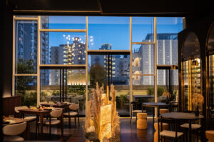
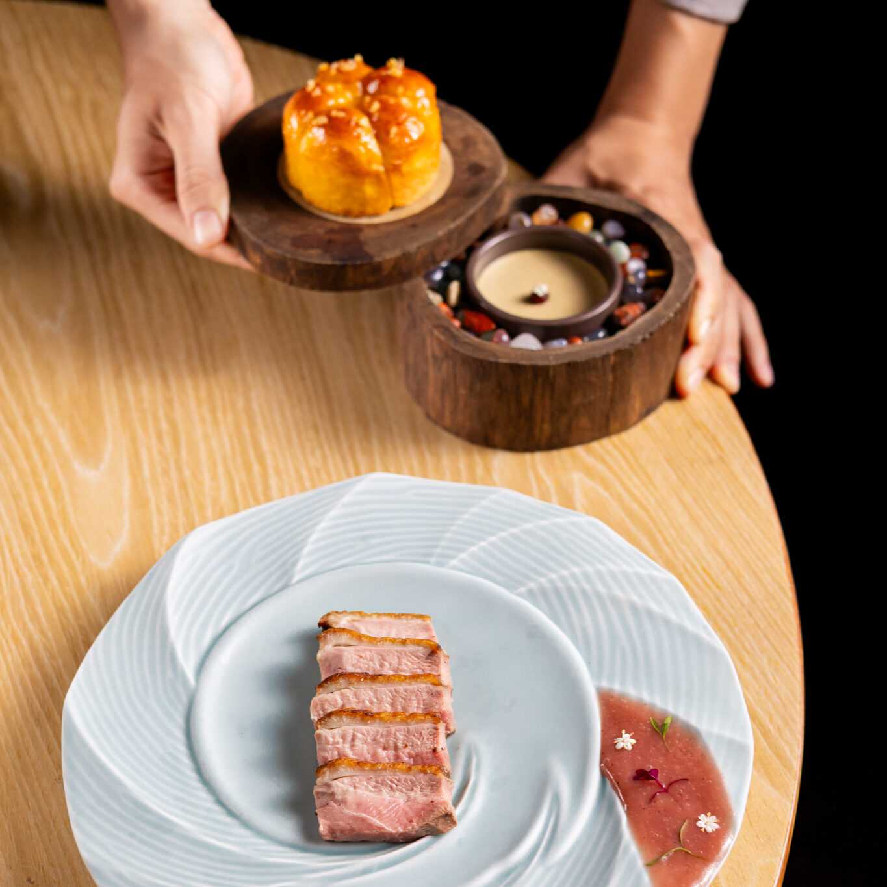
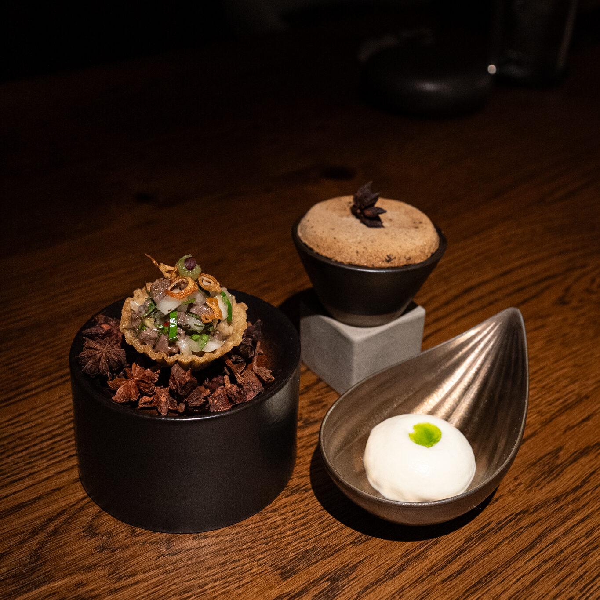
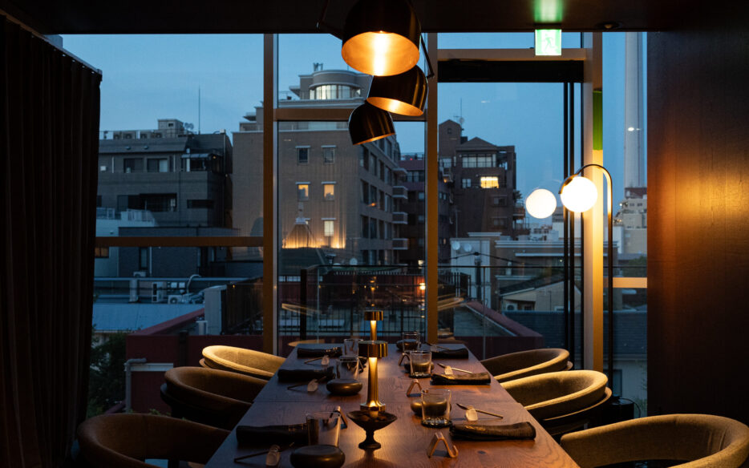
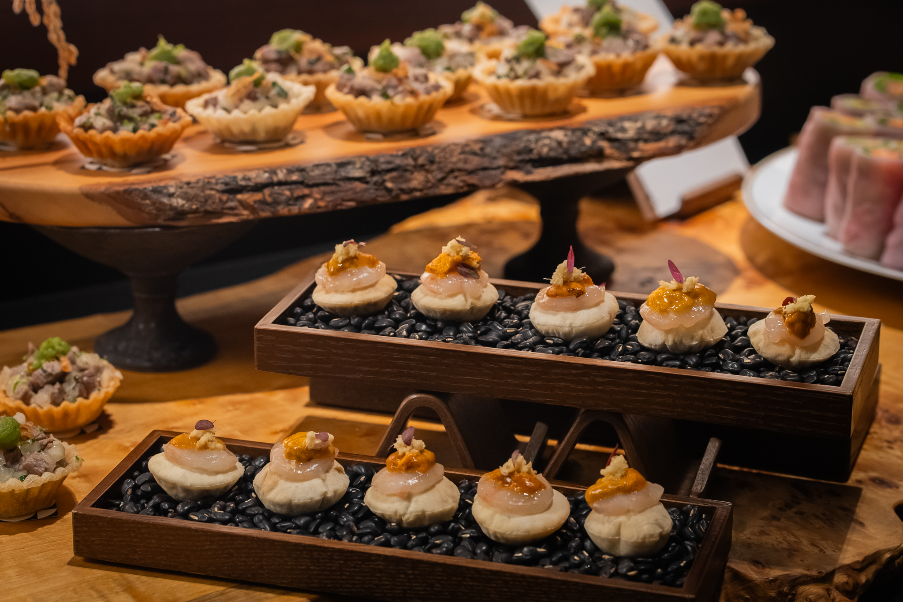
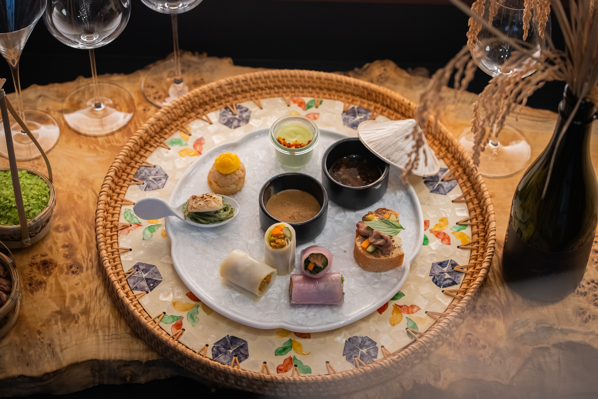
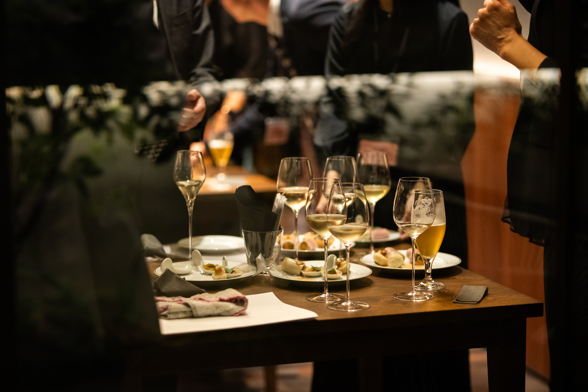
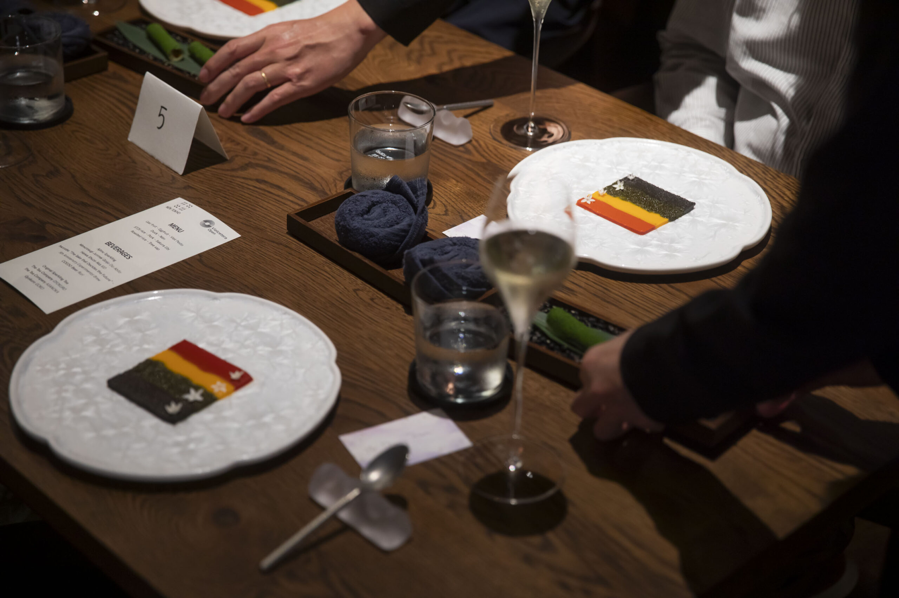

A controlled explosion - 規律的な爆発


Nén Tokyoは、ベトナム料理と文化を現代的な感性で称える革新的なベトナムレストランです。
まだ出会ったことのないベトナムの味を。
ベトナム初のMICHELINグリーンスターシェフ、サマー・レ (Summer Le) が率いています。
Access
MISSION
東京におけるベトナム料理のハブとなり、伝統と革新が出会う場所から、ベトナム料理と文化を世界の舞台へ。
すべての料理に、ベトナムの躍動感あふれるスピリットを込めて。

Our executive chef
サマー・レ (Summer Le) は、革新性と文化的な深みを併せ持つベトナム料理で知られるレストラングループ「Nén」の創設者兼エグゼクティブシェフです。
故郷ダナンからホーチミン、そして東京へとNénを展開し、ベトナム初のミシュラン・グリーンスターを受賞するなど、その活動は国内外で高く評価されています。
彼女の料理は、伝統への深い敬意に基づきながら、ベトナム料理の持つ豊かな表現力を現代的な感性で再構築するものです。

意識的なベトナム料理
consciously vietnamese
Nén Tokyoでは、シェフ・サマー・レがベトナム食材とその風味が引き立つようにメニューを丁寧に構成しています。ベトナム料理の精神と深みに敬意を払いながらも、可能な限り日本国内で育てたり収穫された食材を使い、輸入を最小限に抑えることを大切にしています。
その結果、ルーツに忠実でありながら、日本の土地に根ざした料理が生まれています。

MILESTONES
MENU





THE SPACE
東京で最も洗練された街のひとつ、代官山に佇むNén Tokyo。 著名なデザインスタジオ 「nendo」 が手がけた受賞歴のある建物に、モダンなベトナムのディテールを織り込み、コンテンポラリーでありながら魂に根ざした空間をつくり上げました。



Private events
洗練されたランチ。フルコースの“旅”。思い出に残るプライベートイベント。
Nén Tokyo でのすべての体験は、“想い”を込めて仕立てています。
東京の中心で届ける、まだ語られていないベトナムの物語。
企業イベント、親しい集まり、文化的ショーケースにあわせた、特別メニューと限定体験のご提案も承ります。
ダイニングホール：着席：最大40名様・立食：最大70名様
プライベートルーム：8席




